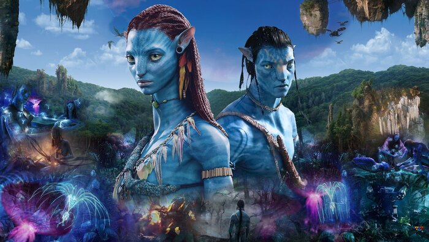
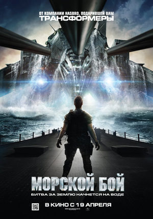
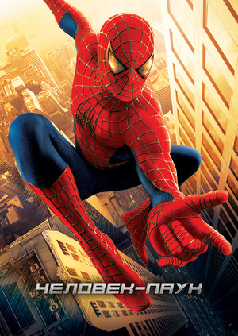
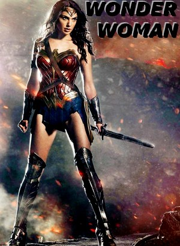

Джейк Салли — бывший морской пехотинец, прикованный к инвалидному креслу. Несмотря на немощное тело, Джейк в душе по-прежнему остается воином. Он получает задание совершить путешествие в несколько световых лет к базе землян на планете Пандора, где корпорации добывают редкий минерал, имеющий огромное значение для выхода Земли из энергетического кризиса.
«Морско́й бой» — американский фантастический фильм 2012 года, по мотивам одноимённой игры, о попытке вторжения инопланетян. Режиссёр Питер Берг. Мировая премьера состоялась 12 апреля 2012 года.
«Мсти́тели» (англ. The Avengers[комм 1]) — американский художественный фильм о супергероях с элементами комедии режиссёра Джосса Уидона, основанный на одноимённых комиксах издательства Marvel Comics. Картина является шестой по счёту в кинематографической вселенной Marvel, а также общим сиквелом предшествующих экранизаций: «Железный человек» (2008), «Невероятный Халк» (2008), «Железный человек 2» (2010), «Тор» (2011) и «Первый мститель» (2011), закрывая первую фазу.

«Человек-паук» (англ. Spider-Man) — американский супергеройский фильм 2002 года от режиссёра Сэма Рэйми. Основанный на одноимённом персонаже Marvel Comics, фильм повествует о жизни Питера Паркера в исполнении Тоби Магуайра, студенте старшей школы, проживающем в Нью-Йорке, который становится борцом с преступностью после получения суперспособностей.
«Чу́до-же́нщина» (англ. Wonder Woman) — супергеройский фильм режиссёра Пэтти Дженкинс, основанный на одноимённом комиксе издательства DC Comics. Является четвёртым фильмом Расширенной вселенной DC после «Отряда самоубийц». В фильме снялись Галь Гадот, Крис Пайн, Дэнни Хьюстон, Робин Райт и Дэвид Тьюлис.
